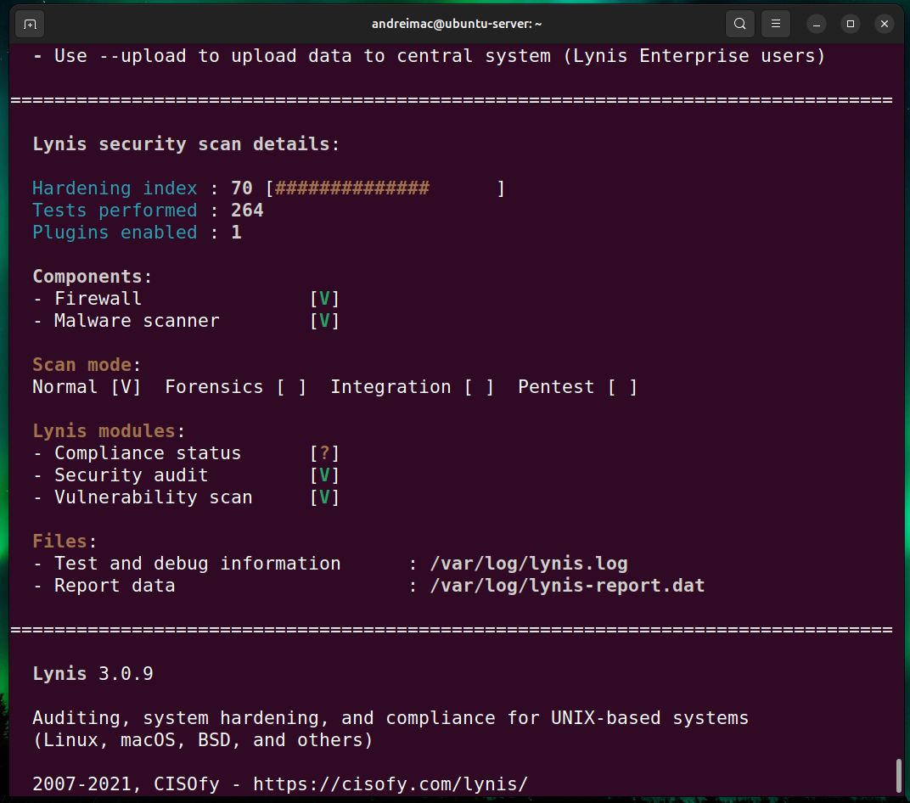
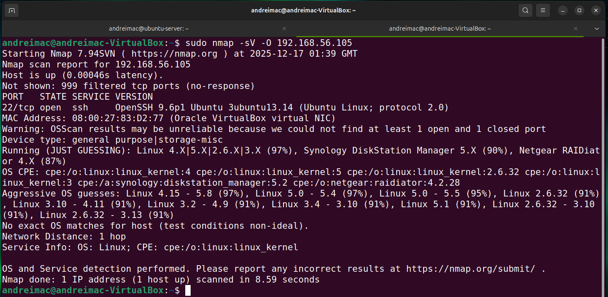
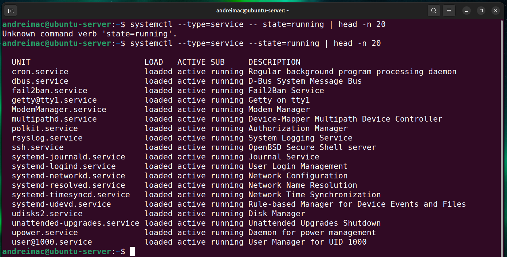
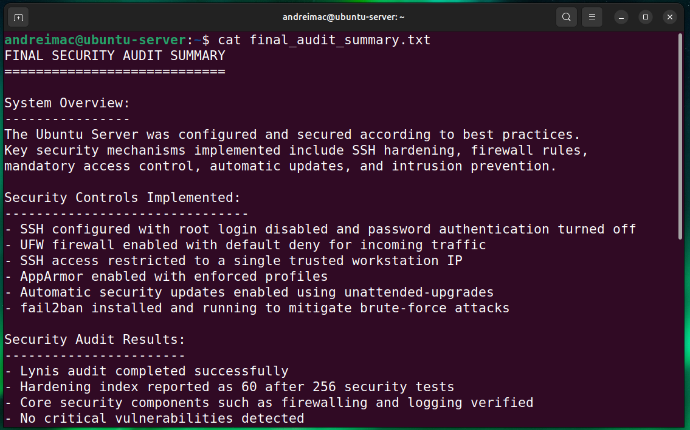
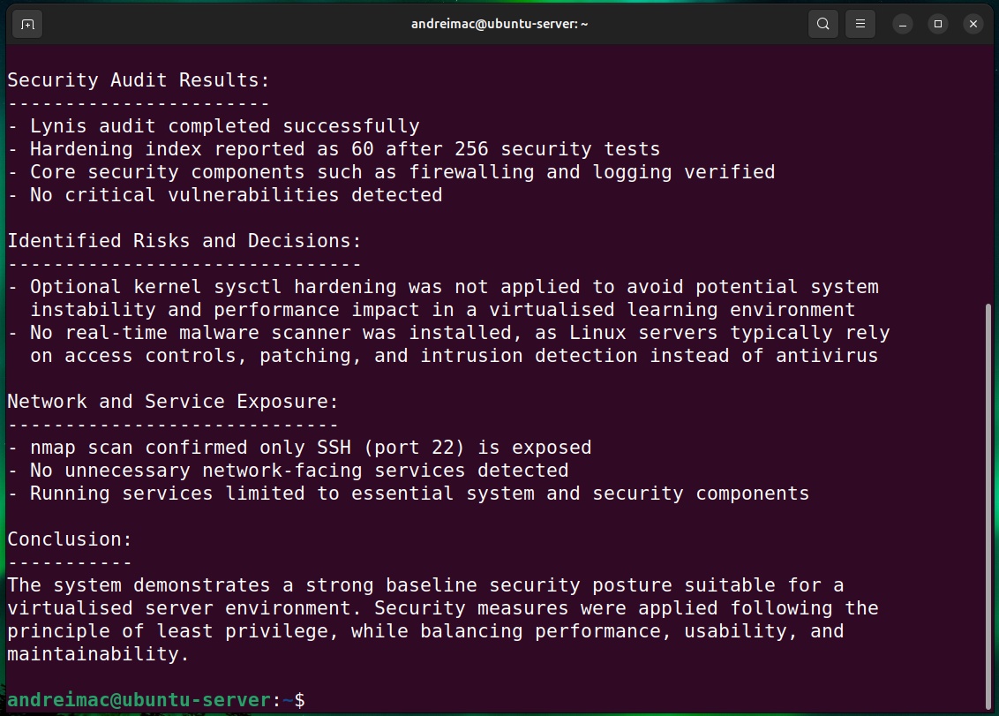

Final security assessment of the Ubuntu Server, including Lynis auditing, network scanning, service verification, access control analysis, and overall system evaluation.
The final phase focused on conducting a comprehensive security audit and overall system evaluation. Security scanning was performed using Lynis, network exposure was assessed with nmap, and active services were reviewed to ensure only essential components were running. Audit findings were analysed and justified, including identified trade-offs appropriate for a virtualised learning environment. This phase demonstrates a holistic understanding of system security, risk assessment, and configuration review.
sudo lynis audit system

This screenshot shows the results of a comprehensive security audit performed using Lynis. Following the implementation of multiple system-hardening measures, the system achieved a hardening index score of 70 after completing 264 security tests, demonstrating a significantly improved security posture. Core security components such as the firewall and malware scanning were enabled and verified, and all critical audit modules completed successfully.
To increase the hardening index, several key security controls were implemented in addition to the original configuration. These included enabling system auditing (auditd), deploying file integrity monitoring using AIDE, enforcing stricter password ageing policies, improving sudo logging and session control, applying targeted network and kernel sysctl hardening, enabling automatic security updates, and activating process accounting. A malware scanning tool (rkhunter) was also installed to address earlier audit recommendations.
The final score of 70 reflects a balanced and well-hardened system suitable for a controlled virtualised learning environment. More intrusive recommendations, such as advanced bootloader protection or low-level kernel recompilation, were deliberately excluded to avoid unnecessary complexity and potential instability. This demonstrates an informed security trade-off, prioritising best-practice hardening, auditability, and system stability in line with the system’s intended purpose.
sudo nmap -sV -O 192.168.56.105

A network security assessment was performed using nmap from the workstation to evaluate the server's exposed services. The scan confirmed that only port 22 (SSH) is open, running OpenSSH on Ubuntu Linux, while all other ports are filtered by the firewall. This demonstrates effective firewall configuration, minimal attack surface, and adherence to the principle of least privilege.
systemctl --type=service --state=running | head -n 20

This command lists the active system services running on the server at the time of the audit. The output confirms that only essential services are enabled, including SSH for remote administration, fail2ban for intrusion prevention, unattended-upgrades for automated security updates, and core system services such as logging, networking, and time synchronisation. No unnecessary or insecure services were identified, demonstrating a minimal and hardened server configuration.
cat final_audit_summary.txt


This command displays the final security audit summary for the Ubuntu server. The summary consolidates all security configurations and audit findings from the coursework, including SSH hardening, firewall restrictions, AppArmor enforcement, automatic security updates, and fail2ban intrusion prevention. The audit confirms that no critical vulnerabilities were detected and that only essential network services are exposed. Identified risks, such as optional kernel sysctl tuning and malware scanning, are documented and justified as deliberate trade-offs appropriate for a virtualised learning environment. This provides a clear overall evaluation of the system's security posture and configuration decisions.
Week 7 brought together all the work from previous weeks and shifted my perspective from configuring a server to evaluating it like an external assessor. Running Lynis, nmap, AppArmor checks and a service inventory required me to justify not only what I had configured but why it mattered and whether the evidence supported it. The before-and-after Lynis scores showed how changes such as SSH hardening and AppArmor enforcement produced measurable security improvements. The nmap scan reinforced the value of verification by proving that only port 22 was exposed, rather than assuming the firewall was correct. Reviewing running services also highlighted the importance of minimising the attack surface.
Most importantly, this week helped me develop an audit mindset—documenting configurations, validating them with tools and presenting findings clearly. This mirrors real system administration practice, where evidence, repeatability and justification are essential. By the end of the audit, I could not only secure an Ubuntu Server but assess its security posture and explain its remaining risks and overall readiness.